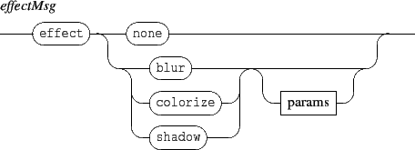
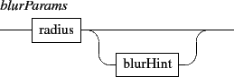
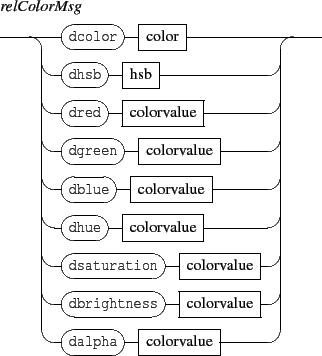
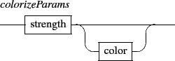

Next: 4.2.2 Relative color messages
Up: 4.2 Color messages
Previous: 4.2 Color messages
Contents
Index

where

The value of a colors may be specified as integer or float values. When expressed as float, the value range is [-1,1]. The correspondence between the float and integer ranges is expressed below.


- color: sets an object color. The color scheme is RGBA. When A is not specified, the color is assumed to be opaque. The integer data range for each color component is [0,255]. The float data range [-1,1] is linearly mapped to [0,255]. Default color value is [0,0,0,255].
- hsb: similar to color but using an HSBA scheme. When A is not specified, the color is assumed to be opaque. The data range for S, B is [0,100], [0,360] for H, and [0,255] for A.
The float data range [-1,1] is mapped to [0,100] for S and B.
For H, 0 refers always to the red color and thus [0,1] is mapped to [0,180] and [-1,0] is mapped to [360,180].
- red,green,blue, hue,saturation,brightness,alpha messages address only the specified part of the color using the ranges and schemes described above.
Next: 4.2.2 Relative color messages
Up: 4.2 Color messages
Previous: 4.2 Color messages
Contents
Index
Grame - Interlude project [ANR-08-CORD-010]